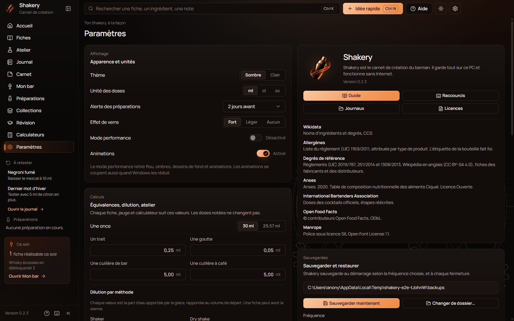
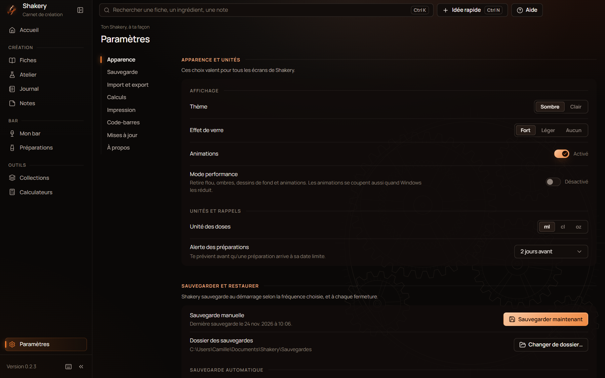
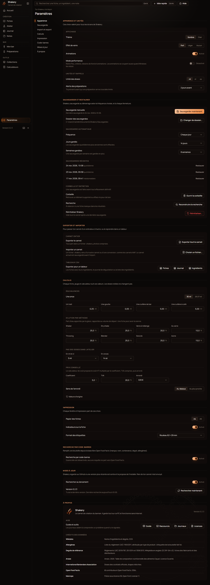

Shakery · refonte ergonomique · planche 09 sur 1024 novembre 2026
Paramètres avec sommaire
Avant

Ce qui change
- Un sommaire à gauche liste les huit blocs en liens texte ; l’entrée courante est marquée par le filet cuivre de la barre latérale, et le sommaire reste en place pendant le défilement.
- Les deux colonnes deviennent une seule colonne rangée par fréquence d’usage : Apparence et unités, Sauvegarde, Exporter et importer, Calculs, Impression, Code-barres, Mises à jour, puis À propos.
- Les crédits de données descendent tout en bas dans À propos, pour que la sauvegarde ne soit plus repoussée sous la ligne de flottaison.
- Chaque bloc a un titre en petites capitales cuivre avec filet, une phrase d’explication et un fond léger sans bord ; à l’intérieur, les sous-sections sont séparées par des titres en petites capitales grises et des filets, sans cartes imbriquées.
- Le choix du thème Sombre ou Clair vit désormais seulement ici, en tête du premier bloc, puisqu’il a quitté la barre du haut.
- Chaque réglage est une rangée avec le libellé et une aide courte à gauche, le contrôle à droite, et tous les contrôles partagent le même bord droit et la hauteur des champs.
- Sauvegarder maintenant est le seul bouton plein ; Guide, Exporter tout le carnet et les autres actions passent en contour, et Restaurer comme Valeurs d’origine restent en bouton fantôme.
- Les champs de Calculs (équivalences, dilution, pas des doses, prix conseillé) suivent une grille commune de quatre colonnes, pour que les champs s’alignent d’une sous-section à l’autre.
- Corbeille et entretien devient une sous-section de Sauvegarde, avec Réinitialiser en contour rouge, puisqu’une sauvegarde précède tout effacement.
- Le chemin du dossier de sauvegarde s’affiche en texte d’aide sous son libellé au lieu d’un champ encadré, et les sauvegardes récentes forment une liste à filets avec un Restaurer discret par ligne.
- Mises à jour affiche la version installée et l’heure de la dernière recherche, avec Rechercher maintenant en contour.
- À propos montre le vrai logo sans halo ni pastille, et les crédits deviennent un tableau à deux colonnes séparé par des filets.
À trancher
- Corbeille et entretien doit-il rester sous Sauvegarde comme ici, ou former un bloc à part en fin de page, juste avant À propos ?
- Pour l’entrée courante du sommaire, préfères-tu le filet vertical à gauche comme dans la barre latérale, ou un vrai soulignement sous le texte ?
- La mention Open Food Facts (ODbL) n’apparaît plus que dans les crédits. Faut-il la garder aussi sous le réglage Code-barres ?
- Faut-il garder le fond léger derrière chaque bloc, ou poser les rangées directement sur le fond de la page ?
Après

Après, page complète
